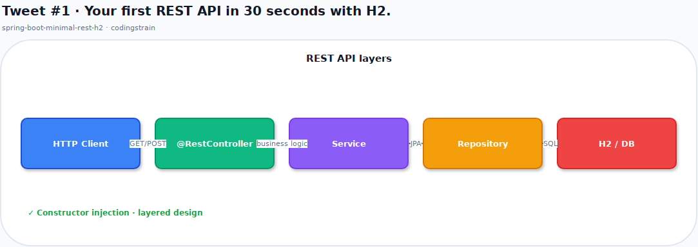

Tweet #1
Architecture — diagrams.net

Code — CodePen pen
html, body {
margin: 0;
width: 100%;
height: 100%;
min-height: 100vh;
box-sizing: border-box;
}
body {
display: flex;
flex-direction: column;
align-items: stretch;
justify-content: stretch;
padding: 0.5rem;
background: linear-gradient(135deg, #667eea 0%, #764ba2 100%);
}
.carbon {
flex: 1;
display: flex;
flex-direction: column;
width: 100%;
min-height: calc(100vh - 1rem);
max-width: none;
border-radius: 10px;
box-shadow: 0 12px 48px rgba(0, 0, 0, 0.5);
overflow: hidden;
}
.carbon-titlebar {
display: flex;
align-items: center;
gap: 10px;
height: 36px;
padding: 0 16px;
background: #252836;
flex-shrink: 0;
}
.carbon-dot {
width: 12px;
height: 12px;
border-radius: 50%;
flex-shrink: 0;
}
.carbon-dot.red { background: #ff5f56; }
.carbon-dot.yellow { background: #ffbd2e; }
.carbon-dot.green { background: #27c93f; }
.carbon-module {
margin-left: auto;
font: 13px/1 system-ui, sans-serif;
color: #8b949e;
letter-spacing: 0.02em;
}
.carbon-editor {
flex: 1;
display: flex;
flex-direction: column;
min-height: 0;
background: #011627;
padding: 1.5rem 2rem 1.75rem;
overflow: auto;
}
.carbon-editor pre {
margin: 0;
flex: 1;
font-family: "Fira Code", "JetBrains Mono", Consolas, monospace;
font-size: 25px;
line-height: 42px;
white-space: pre;
tab-size: 4;
}
.carbon-editor .kw { color: #c792ea; }
.carbon-editor .ann { color: #ffb86c; }
.carbon-editor .str { color: #c3e88d; }
.carbon-editor .typ { color: #ffcb6b; }
.carbon-editor .met { color: #82aaff; }
.carbon-editor .com { color: #5c6370; }
.carbon-editor .num { color: #f78c6c; }
.carbon-editor .pun { color: #89ddff; }
.carbon-editor .txt { color: #d6deeb; }
.carbon-editor.cols {
flex-direction: row;
gap: 1.75rem;
align-items: stretch;
}
.carbon-editor.cols .col {
flex: 1 1 0;
min-width: 0;
display: flex;
flex-direction: column;
}
.carbon-editor.cols .col pre {
flex: 1;
font-size: 25px;
line-height: 42px;
}
.carbon-editor.cols .col-divider {
align-self: stretch;
position: relative;
width: 1px;
background: #1d3b53;
flex: 0 0 auto;
}
.carbon-editor.cols .col-divider::after {
content: "\2192";
position: absolute;
top: 50%;
left: 50%;
transform: translate(-50%, -50%);
width: 30px;
height: 30px;
display: flex;
align-items: center;
justify-content: center;
border-radius: 50%;
background: #011627;
border: 1px solid #1d3b53;
color: #82aaff;
font-size: 16px;
}
<div class="carbon"><div class="carbon-titlebar"><span class="carbon-dot red"></span><span class="carbon-dot yellow"></span><span class="carbon-dot green"></span><span class="carbon-module">spring-boot-minimal-rest-h2</span></div><div class="carbon-editor"><pre><code><span class="ann">@RestController</span>
<span class="ann">@RequestMapping</span><span class="pun">(</span><span class="str">"/library"</span><span class="pun">)</span>
<span class="kw">public</span><span class="txt"> </span><span class="kw">class</span><span class="txt"> </span><span class="typ">BookController</span><span class="txt"> </span><span class="pun">{</span>
<span class="txt"> </span><span class="ann">@GetMapping</span><span class="pun">(</span><span class="str">"/book"</span><span class="pun">)</span>
<span class="txt"> </span><span class="kw">public</span><span class="txt"> </span><span class="typ">List</span><span class="pun"><</span><span class="typ">Book</span><span class="pun">></span><span class="txt"> </span><span class="met">findAll</span><span class="pun">(</span><span class="pun">)</span><span class="txt"> </span><span class="pun">{</span>
<span class="txt"> </span><span class="kw">return</span><span class="txt"> </span><span class="txt">bookService</span><span class="pun">.</span><span class="met">findAll</span><span class="pun">(</span><span class="pun">)</span><span class="pun">;</span>
<span class="txt"> </span><span class="pun">}</span>
<span class="txt"> </span><span class="ann">@PostMapping</span><span class="pun">(</span><span class="str">"/book"</span><span class="pun">)</span>
<span class="txt"> </span><span class="kw">public</span><span class="txt"> </span><span class="typ">Book</span><span class="txt"> </span><span class="met">add</span><span class="pun">(</span><span class="ann">@RequestBody</span><span class="txt"> </span><span class="typ">Book</span><span class="txt"> </span><span class="txt">book</span><span class="pun">)</span><span class="txt"> </span><span class="pun">{</span>
<span class="txt"> </span><span class="kw">return</span><span class="txt"> </span><span class="txt">bookService</span><span class="pun">.</span><span class="met">save</span><span class="pun">(</span><span class="txt">book</span><span class="pun">)</span><span class="pun">;</span>
<span class="txt"> </span><span class="pun">}</span>
<span class="pun">}</span></code></pre></div></div>
Copy for X (194/280)